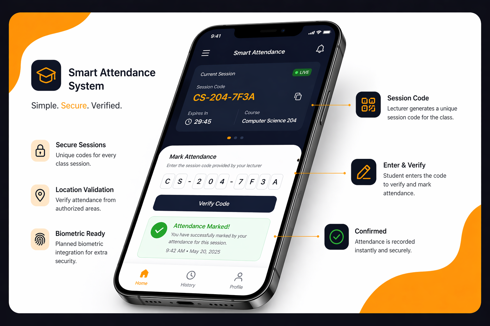
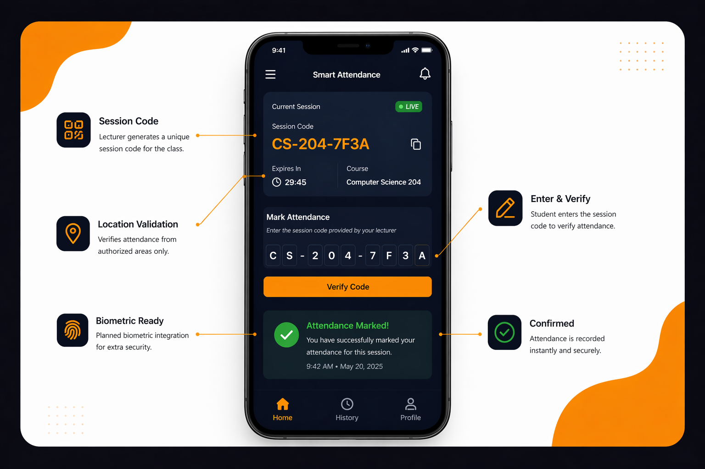

A secure attendance platform that uses session-based code validation, location tracking, and planned biometric verification to prevent fraud while keeping the experience seamless for students and staff.


Traditional attendance systems are easy to manipulate. Students can reuse shared attendance methods, mark attendance remotely, or impersonate others mark attendance remotely, or impersonate others, leading to inaccurate records.
Built a multi-layer validation system:
• Unique session code generated per class session
• Session code expires after a short time window
• Lecturer-controlled session activation
• Lecturer-side verification system
• Planned integration of location + biometric validation
• Real-time attendance logging
Significantly reduced attendance fraud and improved trust in attendance records, while providing lecturers with real-time visibility and control.
• Session-based code authentication • Real-time validation flow • Session-based attendance tracking • Secure scan verification logic • Scalable architecture for institutions
JavaScript, Python (Flask), Session Code Logic, REST APIs, Location Services (planned)
Ongoing development — evolving into a full smart attendance platform (Universe).